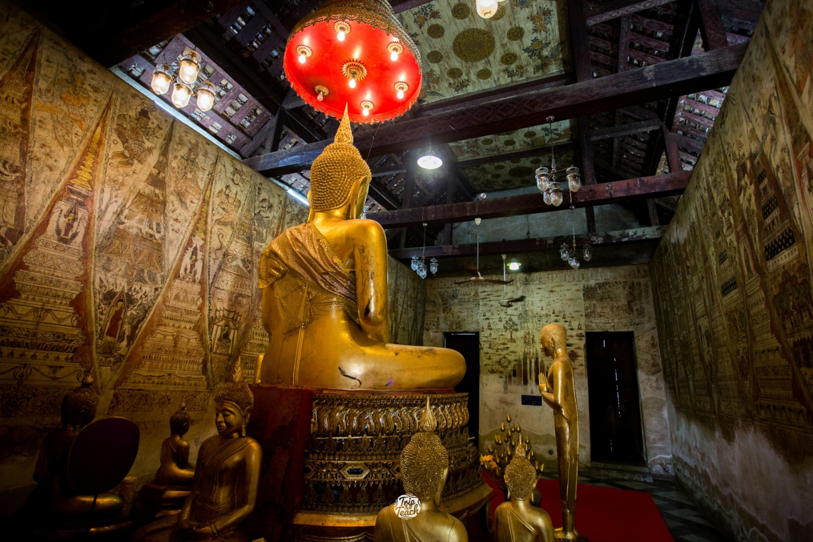
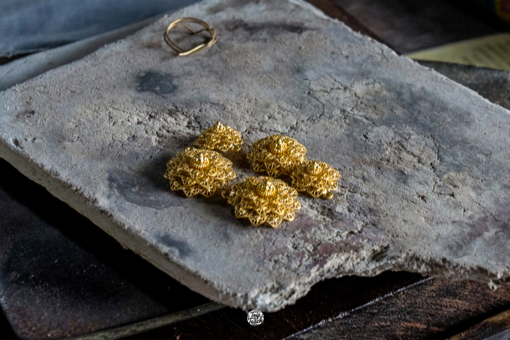
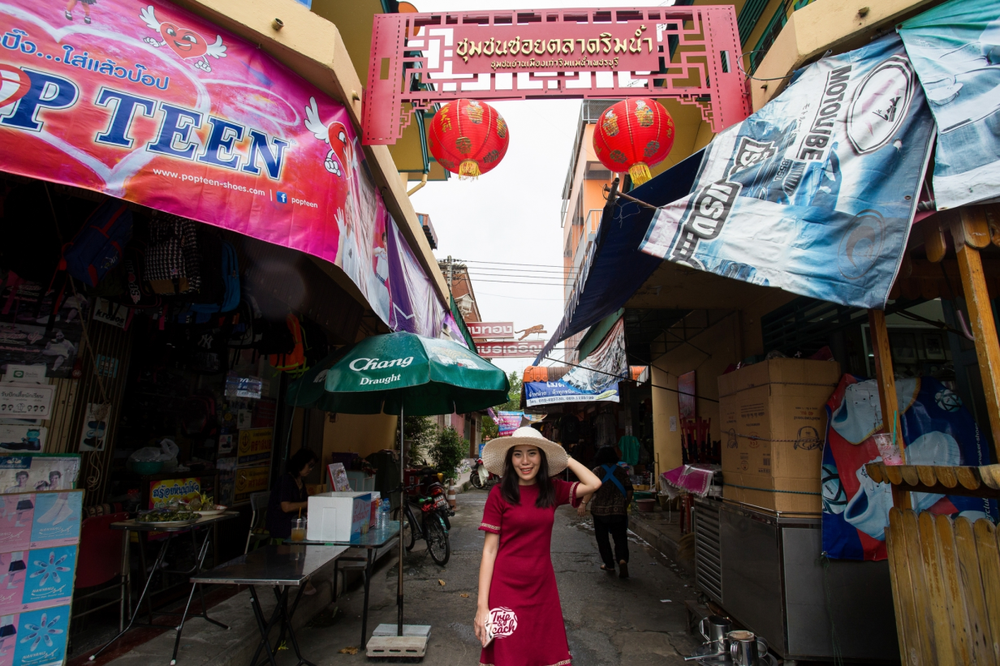
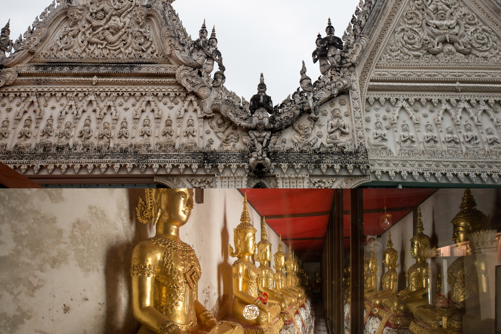

บ้านช่างทอง ป้าเนื่อง
ป้าเนือง เป็น ‘ช่างทองสี่แผ่นดิน’แล้วยังเป็นศิลปินแห่งชาติอีกด้วย...
Read More...



ร้านระเบียงริมน้ำ
ร้านอาหารที่เหมาะแก่การนั่งชิว อาหารอร่อย เป็นบ้านเก่าโบราณอยู่ติดริมแม่น้ำเพชร...
Read More...

วัดมหาธาตุวรวิหาร
เป็นวัดคู่บ้านคู่เมืองเพชรบุรีค่ะ ใครผ่านมาควรมาไหว้ให้เป็นสิริมงคล ตัววันเองสงบ...
Read More...